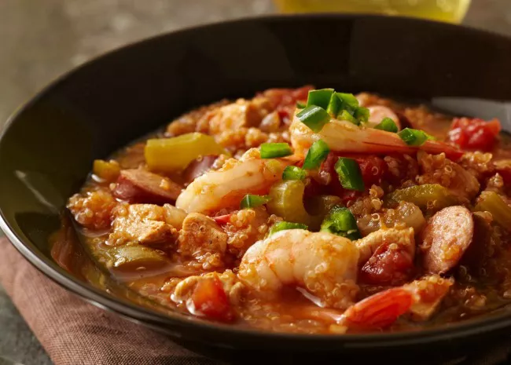

Jambalaya

Description
Jambalaya is a one-pot dish that's made with rice, meat or seafood, and vegetables. With French and Spanish influences, jambalaya is quite similar to paella. The name "jambalaya" likely comes from the Provençal word "jambalaia," which means mishmash.
Like many Cajun and Creole foods, jambalaya starts with the Cajun holy trinity: a flavor base of onion, bell peppers, and celery.
Ingredients
- Peanut oil
- Andouille Sausage
- Chicken Breasts 1-in pieces
- Spices
- Cajun seasoning
- Fresh garlic
- Red pepper flakes
- Salt
- Pepper
- Hot sauce
- Worcestershire sauce
- file power
- Vegetables
- Onion
- Green bell peppers
- Celery
- Plain white rice
- Chicken Broth
Steps
-
Cook the meat: Season the sausage and chicken pieces with
Cajun seasoning. Sauté the sausage until browned, then remove with
a slotted spoon and set aside. Sauté chicken until lightly browned
on all sides. Remove with a slotted spoon and set aside.
-
Cook the vegetables: In the same pot, sauté the onion,
celery, bell pepper, and garlic until tender. Stir in the crushed tomatoes
and seasonings. Add the meat and cook for 10 minutes.
-
Add the rice: Stir in the rice and chicken broth.
Bring to a boil, reduce the heat, and cook until all the liquid is absorbed.